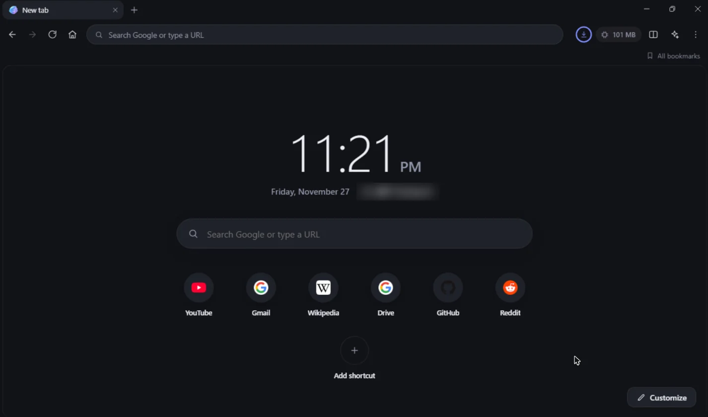
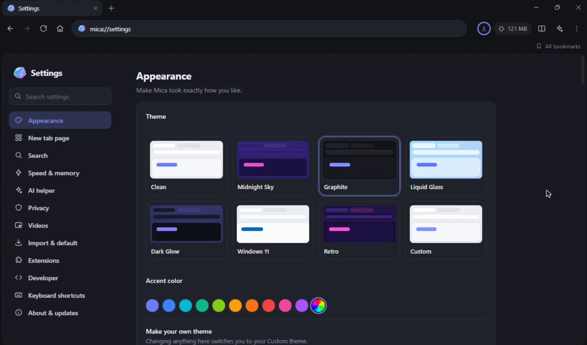
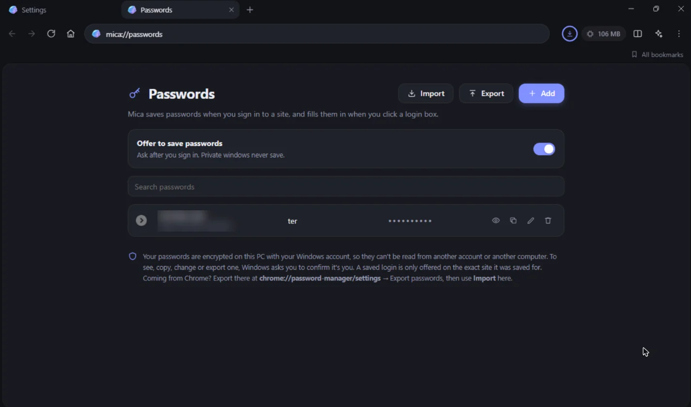
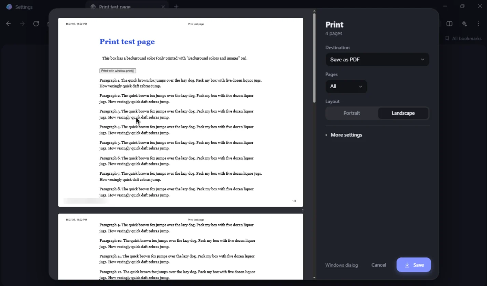
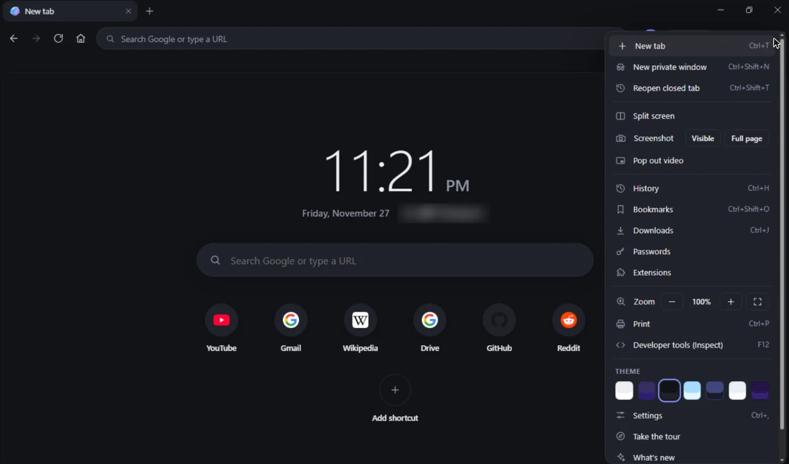
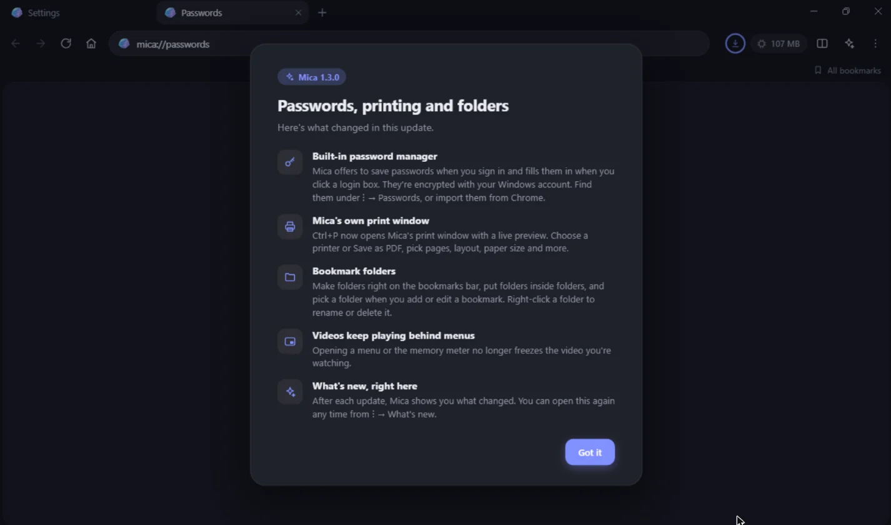

Mica is a free, open-source browser that stays quick on old laptops — even ones with 2 GB of memory. Your Chrome extensions, a built-in password manager, sleeping tabs and beautiful themes.

Mica runs on the Chromium engine that's already part of Windows, so it's small to download and light while you browse.
Built for PCs with 2 GB of RAM. Tabs you aren't using go to sleep and use no memory until you click them.
Add extensions straight from the Chrome Web Store with “Add to Mica”, or bring them over from Chrome.
Saves your logins and fills them in. Encrypted with your Windows account, and Windows asks it's you before showing one.
Seven themes plus your own: colors, wallpapers, Liquid Glass and Retro. Tabs on top or down the side.
Two pages side by side in one window — great for notes and research.
Private windows, tracker blocking, no account needed. Free and open source under the MIT license.
Pick a theme in one click, choose an accent color, or design your own with a wallpaper.

Mica offers to save a password when you sign in and fills it in when you click a login box — only on the exact site it belongs to.

Mica's own print window with a live preview. Choose a printer or Save as PDF, pick pages, layout and paper size.

Screenshots, picture-in-picture, split screen, history, downloads and a free AI helper (optional) are all in one tidy menu.

Mica updates itself in a few seconds and shows you what changed — no hunting through release notes.

All three run on Chromium. Mica is the one made for older and low-memory PCs.
| Feature | Mica | Chrome | Edge |
|---|---|---|---|
| Free and open source (MIT) | Yes | No | No |
| Uses the engine already in Windows | Yes | No | Yes |
| Live memory meter in the toolbar | Yes | No | No |
| Sleeping tabs | Yes | Yes | Yes |
| Chrome Web Store extensions | Most | Yes | Yes |
| Built-in password manager | Yes | Yes | Yes |
| No sign-in, no ads in the browser | Yes | Optional sign-in | Shows news and offers |
Chrome is a trademark of Google LLC. Edge is a trademark of Microsoft Corporation. Mica isn't affiliated with either.
The short answers.
Mica isn't code-signed yet, so Windows SmartScreen doesn't recognize it. Click More info → Run anyway. Mica is open source — you can read every line of it on GitHub. Updates after that install themselves.
Most do: ad blockers, dark mode, password managers and tools for sites. A few that rely on Chrome-only features may not work fully.
Yes. Mica imports bookmarks, history and extensions from Chrome, Edge, Brave, Vivaldi and Opera. For passwords, export them in Chrome (chrome://password-manager/settings) and use Import on Mica's Passwords page.
Yes. The Mac version runs on Apple silicon and Intel Macs (macOS 12 or newer). For Linux there's an AppImage that runs on most distros, and a .deb for Ubuntu, Debian and Mint. Same look, same extensions, same password manager (protected by your Keychain or keyring).
Mica isn't notarized by Apple yet. Drag Mica to Applications, then right-click it and choose Open, and Open again. You only need to do this once.
Yes — get the 32-bit version from the download options.
Windows 10 or 11 (Mica uses the WebView2 engine that comes with Windows, so it's about 5 MB), macOS 12 or newer, or a 64-bit Linux desktop. No account required.